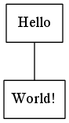

Dot Source Code Blocks in Org Mode
Table of Contents
Org Mode support for Dot

Introduction
Dot is one of six layout programs in the Graphviz open source
graph visualization software, created at AT&T. The Graphviz layout
programs take simple text graph descriptions and make useful diagrams
in a variety of formats. Dot source code blocks call the dot
layout program by default, but can be configured to call any of the
other five Graphviz layout programs.
Graph visualization has applications in many technical domains, where
it is often used to explore large data sets. A typical use in Org
mode chains the dot source code block to a source code block in
another language that is responsible for converting a data table into
source code for one of the Graphviz layout languages.
Requirements and Setup
Graphviz is distributed on an open source basis under The Eclipse
Public License. Executable packages from AT&T are available for
Linux, Solaris, Windows, and Mac.
You can configure Org mode to execute dot source code blocks by
adding a line to org-babel-load-languages:
(org-babel-do-load-languages 'org-babel-load-languages '((dot . t))) ; this line activates dot
Optionally, graphviz-dot-mode offers font locking, indentation, and
preview of graphs. The variable org-src-lang-modes can be customized
to contain an entry that associates dot files with
graphviz-dot-mode.
Org Mode Features for Dot Source Code Blocks
Header Arguments
Dot source code blocks produce graphics files. The default value for
the :results header argument is “file” and for the :exports header
argument it is “results”.
There are two dot specific header arguments that can be used to
tailor the command line. They are:
:cmd- this header argument can be used to change the layout program from the default “dot”. Sensible values are “neato”, “fdp”, “sfdp”, “twopi”, and “circo”.
:cmdline- the default sets the
dotflag-Tto the extension of the output file in order to indicate the output format.Graphvizrecognizes three dozen output formats. Other flags that can be set with:cmdlinecontrol default graph, node, and edge attributes, among other functionality.
The :file header argument is required for dot source code blocks.
Sessions
Dot does not support sessions.
Result Types
Dot source code blocks produce graphic files, so the default value
“file” is the only sensible type of result.
Other
Dot source code blocks currently do not evaluate variables.
Examples of Use
A typical use of a dot source code block is to produce a graph
visualization of a data set. In this example, the following input
table
| a | Hello |
| b | World! |
is passed to a source code block that is responsible for producing
valid dot code
(mapcar #'(lambda (x) (princ (format "%s [label =\"%s\", shape = \"box\"];\n" (first x) (second x)))) table) (princ (format "%s -- %s;\n" (first (first table)) (first (second table))))
#+name: make-dot
#+BEGIN_SRC emacs-lisp :var table=dot-eg-table :results output :exports none
(mapcar #'(lambda (x)
(princ (format "%s [label =\"%s\", shape = \"box\"];\n"
(first x) (second x)))) table)
(princ (format "%s -- %s;\n" (first (first table)) (first (second table))))
#+END_SRC
and this is chained to a dot source code block
#+BEGIN_SRC dot :file images/test-dot.png :var input=make-dot :exports results
graph {
$input
}
#+END_SRC
that wraps the input in a graph{} command to produce the following
graphic output
graph {
$input
}

An example of chaining source code blocks to produce a dot graph is
provided by Schulte et al. in A Multi-Language Computing Environment
for Literate Programming and Reproducible Research.